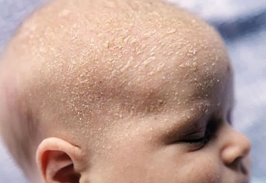
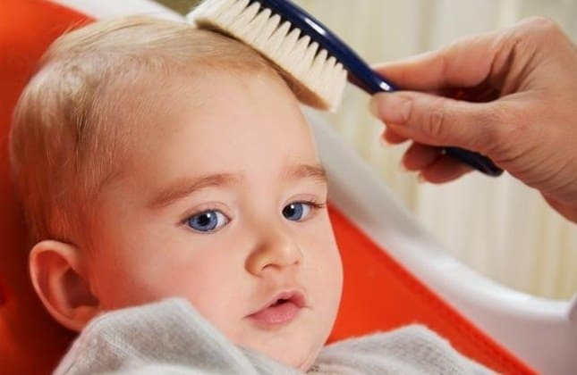

Гнейс («колыбельный чепчик», «молочная корочка») — твердые, напоминающие чешуйки высыпания на коже волосистой части головы младенца, образующиеся из отмерших клеток кожи.
ПРИЧИНЫ
Младенцы растут очень быстро, и их кожа — тоже. Клетки кожи нарастают очень быстро. Одновременно специальные железы в коже волосистой части головы — сальные — вырабатывают маслянистое вещество, которое называют кожным салом. Оно помогает сохранению влажности и здоровья кожи. Однако избыточная секреция этого вещества, возможно из-за гормонов матери, полученных младенцем при рождении, может привести к образованию чешуек из отмерших клеток кожи, склеенных кожным салом. В медицине это состояние называется себорейным дерматитом и в той или иной степени наблюдается у большинства младенцев. Иногда себорейный дерматит может появляться на ушах, шее, бровях. Гнейс обычно развивается в первые три месяца жизни и исчезает к шести месяцам.
ЧТО ДЕЛАТЬ
В отличие от экземы (которая сопровождается зудом и доставляет неудобства) гнейс редко беспокоит младенцев. Однако неэстетичный внешний вид высыпаний беспокоит родителей. В большинстве случаев никакого лечения не требуется, и со временем гнейс самостоятельно исчезает. Но если чешуйки увеличиваются и превращаются в толстые корки, то вот испытанные средства, которые мы используем в своей практике.
Смажьте волосистую часть головки младенца маслом. Вотрите растительное масло в твердые чешуйки, чтобы размягчить их. Дайте маслу впитаться в течение хотя бы 15 минут, затем удалите чешуйки мягкой расческой или гребешком.
Детский шампунь. Один раз в неделю мойте младенцу голову безрецептурным детским шампунем на основе дегтя, чтобы предотвратить образование чешуек. Хорошая альтернатива — детский шампунь с маслом чайного дерева. Особо позаботьтесь, чтобы шампунь не попал младенцу в глаза. Корочка гнейса обычно крепче в области родничка, потому что родители боятся мыть, а иногда даже касаться этого «тонкого» участка. Поскольку кожа над родничком на самом деле довольно толстая, а под ней - слой волокнистой ткани, то эту область можно мыть и вычесывать так же, как и всю остальную часть кожи головы.

Увлажните волосистую часть головки младенца. Чешуйки обычно становятся суше и тверже зимой из-за сухого воздуха при центральном отоплении. Используйте увлажнитель, чтобы увлажнить воздух в комнате младенца.
Подставляйте кожу головы солнечным лучам. Убедитесь, что ваш младенец получает достаточно свежего воздуха и имеет возможность несколько минут наслаждаться целительными солнечными лучами, ласкающими его головку. Постарайтесь, чтобы в холодные зимние месяцы кожа и голова ребенка находились под солнечными лучами хотя бы по пятнадцать минут в день.
Ход рыбой! Использование омега-3 полиненасыщенных жиров поможет смягчить сухую, шелушащуюся и воспаленную кожу. Если вы кормите грудью, принимайте добавки с омега-3 жирными кислотами, если вскармливаете младенца смесью - убедитесь, что она обогащена докозагексаеновой кислотой (омега-3 полиненасыщенная жирная кислота).
Поскольку гормоны и сальные железы проявляют активность только в первые месяцы жизни, вы обнаружите, что «колыбельный чепчик» постепенно исчезает, а ваш младенец место него начал отращивать «чепчик» мягких, шелковистых волос.
Здоровье ребенка от докторов Сирс / Сирс У. и др.